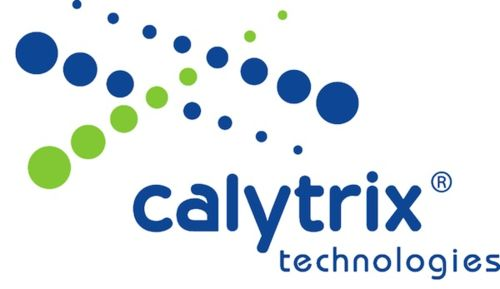

| Release Date | April 1st, 2013 |
| Status | Released |
| Download | Archive |
| Git Tag | portico-2.0.0 |
| Baseline | /portico-2.0.x |
Notwithstanding the date, I am now very pleased to report that the latest release of Portico, v2.0.0, is now available and ready for download. This has been the focus of a large development and testing effort in recent months and brings with it a number of significant updates.
The Portico v2.0.0 release signals the completion of a large development and testing effort over the past 6 months. This major update has two main focus areas:
In addition to these main focus areas, a number of bug fixes, minor enhancements and performance improvements have been added, and the version of the underlying networking library has been updated to provide increased performance and stability.
The major update for Portico v2.0 has been the introduction of an IEEE-1516 (2010) or HLA-Evolved interface. This work has been funded by Thales Group and brings with it support for all the most commonly used services of the HLA Evolved interface.
From the Thales Press Release:
Dan Gregory, responsible for modelling and simulation activities in the Thales Group Technical Directorate, identified that the lack of quality open source RTIs was restricting the adoption of standards-based architectures and was also causing architects to make design compromises in order to optimise licensing costs.
"We saw the opportunity for a quick-win in kick-starting HLA adoption, particularly outside the training community. Portico was an obvious choice for meeting this objective."
As part of the work completed with Thales, a considerable revamp of the supported C++ compilers for both the HLA v1.3 and IEEE-1516e interfaces has been completed. This has seen support added for 64-bit across Windows, Linux and Mac OSX, as well as the general expansion of compiler support on Windows. The full list of supported environments is listed below:
This release of Portico has also seen a significant update to the underlying communications library used to network federates together. This binding was last updated with the Portico v0.9 release, and has now been moved to a newer version of the supporting reliable-multicast library (JGroups). There have been a number of stability and throughput improvements implemented in recent versions of JGroups, as well as a number of API changes (making a quick update a bit difficult!).
This update has now rolled into Portico v2.0.0.
Portico has now moved the hosting of its code from Subversion over to Git. Given the largely distributed development nature of Portico, Git provides a number of advantages and more readily supports the involvement of developers outside the core group.
You can find the Portico Git repositories on GitHub here: https://github.com/openlvc/portico